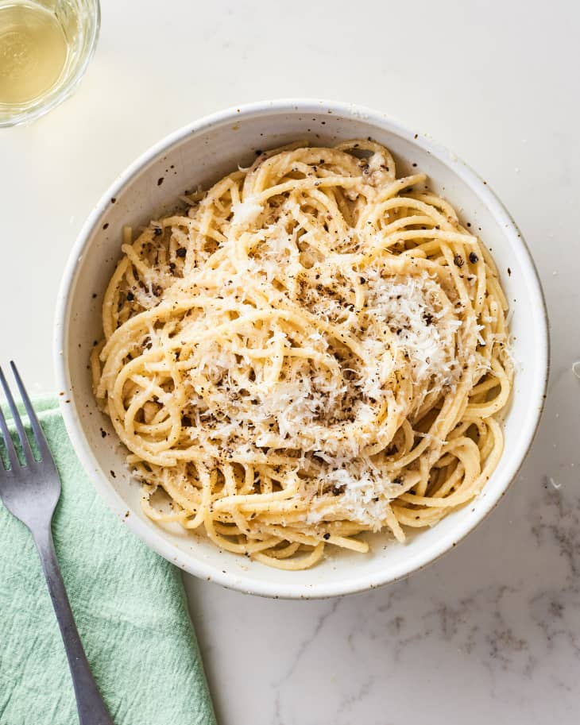

Cacio e Pepe
Literally “cheese and pepper,” this minimalist cacio e pepe recipe is like a stripped-down mac and cheese.

Ingredients
- Kosher salt
- 6 oz. pasta (such as egg tagliolini, bucatini, or spaghetti)
- 3 Tbsp. unsalted butter, cubed, divided
- 1 tsp. freshly cracked black pepper
- ¾ cup finely grated Grana Padano or Parmesan
- ⅓ cup finely grated Pecorino
Preparation
- Bring 3 quarts water to a boil in a 5-qt. pot. Season with salt; add pasta and cook, stirring occasionally, until about 2 minutes before tender. Drain, reserving ¾ cup pasta cooking water.
- Meanwhile, melt 2 Tbsp. butter in a Dutch oven or other large pot or skillet over medium heat. Add pepper and cook, swirling pan, until toasted, about 1 minute.
- Add ½ cup reserved pasta water to skillet and bring to a simmer. Add pasta and remaining butter. Reduce heat to low and add Grana Padano, stirring and tossing with tongs until melted. Remove pan from heat; add Pecorino, stirring and tossing until cheese melts, sauce coats the pasta, and pasta is al dente. (Add more pasta water if sauce seems dry.) Transfer pasta to warm bowls and serve.